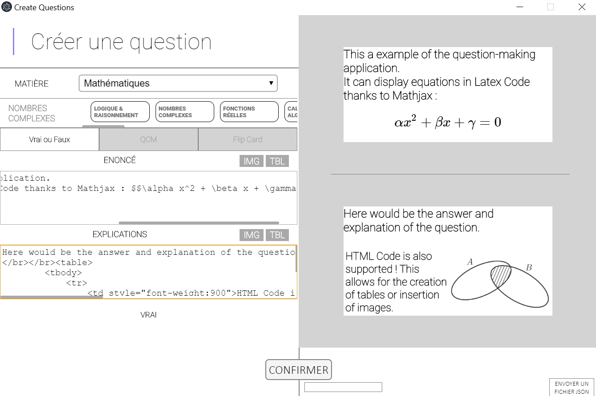

Description
This application was built to assist me and others in studying. It contains plenty of questions for many subjects and explanations to go with.
It follows the content of PTSI (a category of "classe préparatoire") but it can also be used by other students in the scientific field.
Many questions are taken from my teachers, some from the internet, and other I wrote myself. They are usually very short and do not require to write anything down on a paper. Most of those questions only help you to learn lessons and definitions, they do not provide any help for tests and exercises.
Some of those are MCQ (Multiple choice questions), some are "True or False" questions, and many are "flip cards" as filling in a formula on your phone takes a lot of time and is not very productive. Thus, with flip card you just try to think about the answer and flip the card when you are ready.
How it's Made
This application was made using the google framework : flutter. It allows for quick and cross platform-delevopment. The preview down below is actually from the same source code as the android application, just build for web.
The questions are stored on an express javascript application with questions returned as a response to a POST request. Express apps can be deployed instantly with little knowledge of backend development.
Questions are created on a desktop app made with electron that basically turns latex code into images which are then compressed to take as little space as possible. In order to generate the images, the latex code is preview live thanks to Mathjax, once the question is done, the Mathjax container is turned into a canvas and the canvas data is the one that's actually sent to the server.
Try It

00:00